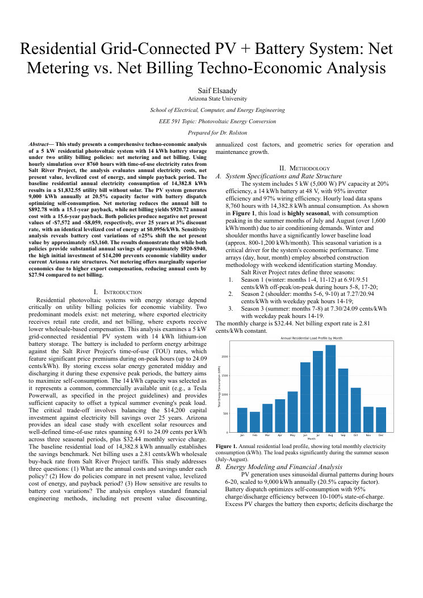

Hourly techno-economic model comparing net metering vs. net billing for residential solar-plus-storage

An EEE 591 (Photovoltaic Energy Conversion, ASU) final project that models a 5 kW residential PV system paired with a 14 kWh battery and evaluates its economics under two utility billing policies: net metering and net billing. Using an 8,760-hour (full-year) simulation with Salt River Project time-of-use rates, it quantifies annual electricity costs, net present value, levelized cost of energy, and payback period to assess whether home solar-plus-storage is financially viable under current Arizona rate structures.
The analysis was implemented in Python with NumPy and Pandas for the hourly simulation and Matplotlib for figures. The pipeline loads 8,760-hour load and PV-production CSVs, builds a time-of-use rate array from SRP seasonal/peak definitions, dispatches the battery hour-by-hour to maximize self-consumption, then computes annual bills under each policy and runs the financial model (NPV, annualized cost, LCOE, payback) plus a battery-cost sensitivity sweep. Results are written up in an IEEE-style report with abstract, methodology, results, and conclusion.
Both policies cut the annual bill by roughly 49-51% (net metering to $892.78, net billing to $920.72) but neither is economically viable under current Arizona rates: 25-year net NPV is -$7,572 (net metering) and -$8,059 (net billing), payback is 15.1-15.6 years, and LCOE is $0.0956/kWh; net metering holds a ~$487 lifetime NPV advantage. Full details are in docs/EEE591_Project_Paper-1.docx.pdf.